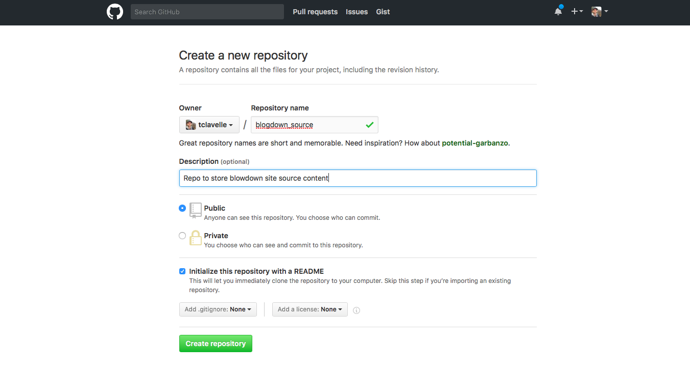
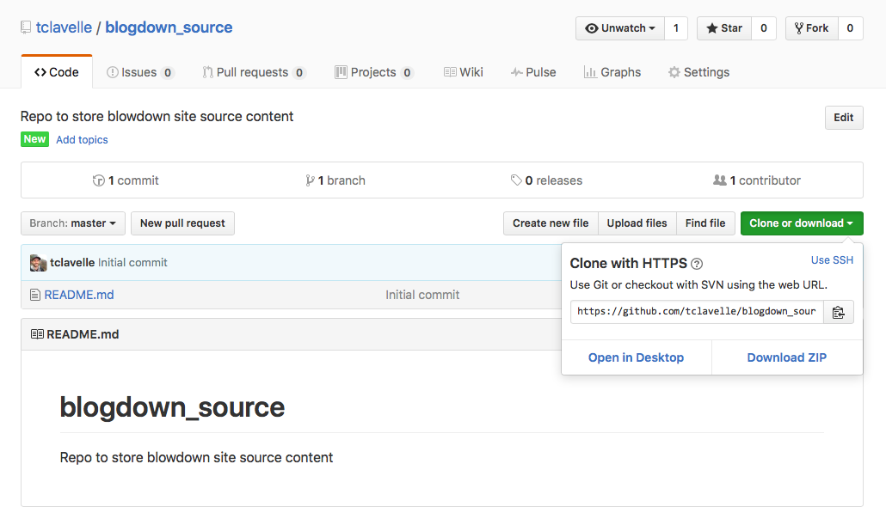
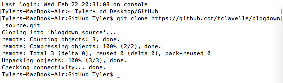
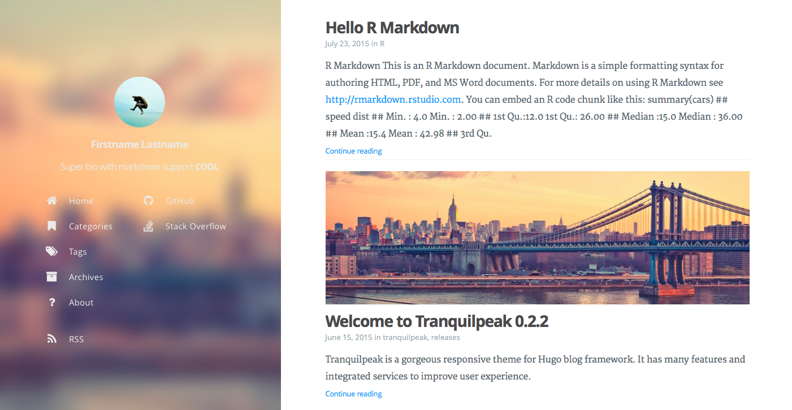
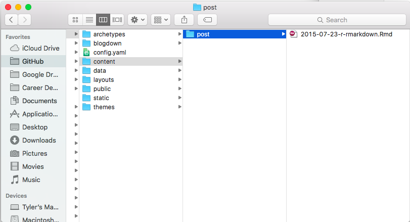
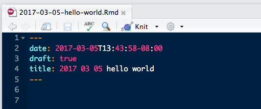
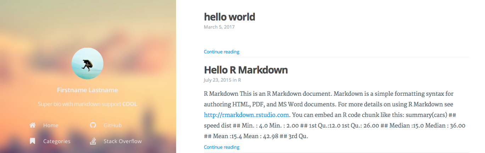

When I first started learning to code in R, Google was (and still is) my go-to when I had a question. It didn’t take long to realize that this generally brought me to one of two destinations - StackOverflow or [Insert Name]’s Blog. So, I created a StackOverflow account and decided to start my own data science blog. However, I didn’t quite know where to start and spent most of 2016 scoping different platforms. While I won’t go into all the details of this process, the cliff notes are as follows:
Enter blogdown, the new brainchild of Yihui Xi. Though still in the early beta stage, blogdown checked all the boxes I was looking for. So, now that i’m up and running, it felt only natural to write my first blog post about how to get started blogging with blogdown. Blogdown is a R package that combines the ease of RMarkdown with the flexibility and customizability of Hugo. Hugo is an open-source static site generator similar to Jekyll, which means it builds your website once rather than each time a user visits it by taking all files within the website’s directory and rendering a complete website.
Before I jump in to explaining how to use blogdown, I want to first explain my approach to hosting my blog on GitHub, as it is important for the remainder of this post. User pages on GitHub require all site content (and only site content) to be on the master branch. This is problematic for blogdown sites because when Hugo builds your website it places the site content in a new folder called public/. Thus, your blog’s source and site content will be on the master branch and GitHub will be unable to render your site. So far I’ve seen two options for getting around this issue:
Two branches (and a subbranch) - Remove all source content from the master branch and place it in a new branch, using a subbranch to mirror the public/ folder on the new branch to the master branch. While this method allows you to store all your content in the same repo, it’s rather confusing to set up if you’re not a GitHub ninja.
Two repositories - Create a repo to store your source content and tell blogdown to publish the site to your username.github.io repository each time you build your site. Though this approach is less streamlined than the two-branch method, the only real added hassle is remembering to push an additional repository to GitHub.
After initial partly-successful attempts to use the two-branch method, I decided to keep it simple and use the two repository method for my site. If you decide to go the two-branch route, see this great post by Amber Thomas (which was my primary resource) and this post by Jente Hidskes.
Ok, now that we’ve decided to use the two repository method to host our site, let’s get started making a blog with blogdown.
README.md file.
clone or download button on the right side of your new repo’s page and copy the URL.
cd <desired directory> to navigate to the directory where you’d like your new repository to live. I keep all my repos in a GitHub/ folder on my desktop, so I’ll put the repository there. After navigating to the desired directory, run git clone <GitHub URL> to clone the new repository.
Open up Finder; you should now see the blogdown_source/ folder containing only the README.md file. Now that you’ve successfully cloned the repo, delete the README.md file. Don’t add anything else to this folder just yet, blogdown requires an empty directory to get started.
If you don’t already have a repository setup for your
A great feature of blogdown is that it handles the installation of Hugo for you, which means you don’t need to know much about Hugo to start blogging with blogdown. I found this to be a big advantage over the complicated dependencies and installation process of Jekyll.
blogdown package and run the install_hugo() command. This can just be done in the console.# Load blogdown package and install Hugo
library(blogdown)
install_hugo()Doesn’t get much more straight forward than that.
Like install_hugo(), blogdown provides the handy new_site() function to automatically create the required structure for you website in the (empty) directory you specify.
Another great feature of this function is that you can use the theme argument to specify the theme you want for your website and blogdown will download all necessary files into the new site directory it creates. Check out Hugo’s theme gallery for a ton of options. Let’s try the Tranquilpeak theme theme, which we specify with theme = 'kakawait/hugo-tranquilpeak-theme', which is just the GitHub user and repo name for the theme. We’ll also set the format argument to format = 'toml' to tell blogdown that we want to use toml for our site’s config file. toml is actually the default setting but I wanted to point it out because the config.toml is important for customizing your website. Once you select a theme for your site, checkout the GitHub repo for the theme and determine whether the theme file is a .toml or .yaml file and set the format argument accordingly.
# Create new site in our recently cloned blogdown repository
new_site(dir = 'blogdown_source',
theme = 'kakawait/hugo-tranquilpeak-theme',
format = 'toml')A few things happen upon running the above code:
blogdown will add all the required Hugo components to the previously empty directory, displaying the progress in your R console
An example RMarkdown post will be created and opened automatically
RStudio will start serving your site in the RStudio viewer, which you can open in your web browser by clicking on the arrow button next to the broom

Congratulations! You now have a functioning website created with blogdown! However, before you’re ready to publish your site and start and writing blog posts, let’s first understand a bit more about how Hugo and blogdown work together to organize and build your site.
Open up your repository folder. You should see a bunch of new folders and files, including for the theme you told blogdown to use for your website and the demo RMarkdown post in the blogdown/post/ directory.

While you should definitely see Hugo’s documentation for details on the purpose of these directories, I’ll explain the key elements you need to understand to get started with blogdown.
baseurl set this to the desired URL for your site, in this case baseurl = "https://<usernamr>.github.io/"title set the title for your new site. Some completely random and objective examples include “Real Leaks, Fake News”, “Gravy Fries and Putin”, and “Kellyanne’s Alternative Factory”description a brief description or mission of your new site, something like “Democracy Described in Data” or “Hair and Imbalanced”theme this should list the theme you specified when creating the sitepublishDir tell blogdown which directory it should place the rendered site in. This directory will include a copy of everything that gets generated in the public/ directory of your site’s root directory. To use the two repository method described above, set this to publishDir = "../<username>.github.io". Adjust this path to where ever you keep your <username>.github.io repositorypublic/ - The directory where Hugo will place your rendered website content. The contents of the public/ directory are the only things that can be present on the master branch of your username.github.io page in order for GitHub to render the site properly. This creates the need to use the two branch or two repository approachescontent/. Each sub directory will consist of either a single index.md (or index.html) file, or a series of files representing multiple posts of the same content typeOk, at this point we have a functioning Hugo website with a cool theme. We’ve set the baseurl and publishDir and given our site a title and description. Now it’s time to start creating content.
blogdown lets you easily create new content with the aptly named new_post() and new_content() functions. These functions will both create a new RMarkdown or markdown file in a sub directory of content/ that you specify. new_post() is essentially just a shortcut for new_content(path = 'post/').
Let’s create a new post, being sure not to include spaces or other special characters in out title.
# Create a new post
new_post(title = 'hello-world.Rmd')Again, blogdown helps us out by creating and opening the .Rmd file for our new post, which it placed in the content/post/ directory. We could’ve specified .md as the file type if we wanted to use plain markdown. The newly created file has .yaml front matter, which includes the date:, draft:, and title: fields. Another thing blogdown does is to prepend the date to the file name and title. This is done to assist with ordering content, but we can remove the date from the title: field as long as we keep the date in the file name and date: field.

We can now type away like any other RMarkdown document! When the site is rendered with serve_site() the new hello-world post will be the top entry.

Unless you’re creating this website for your eyes only, you still need to push it to GitHub before the rest of the world can read your tremendous blog entries. Don’t worry, GitHub and RStudio have some of the best people, great people, and publishing your new site is easier than, like, anything you’ve ever seen.
At this point, you either already have, or recently created, your <username.github.io> repository and cloned it to your local machine. You also already told Hugo to publish your site to this same repository using the publishDir = "<username.github.io" option in your site’s config.toml file. There’s only a few steps left!
Tell Hugo to build your site with build_site() (no arguments required). Once Hugo finishes rendering your site, take a look at your <username>.gihub.io directory, it should now contain the same files as the public/ directory of your source content repository.
Open up Terminal, navigate to your <username>.gihub.io directory using cd <path to username.github.io repo>. Stage all changed files, commit your changes, and push your new site to GitHub.
That’s it! Navigate to your new website https://<username>.github.io and check out your hard work!